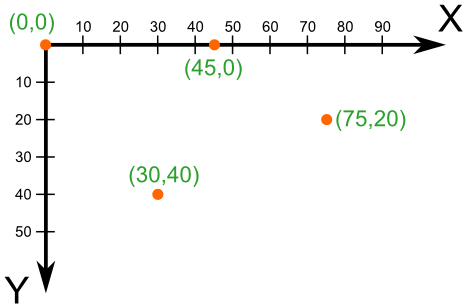
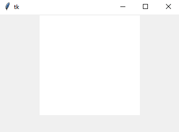
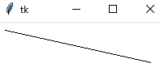
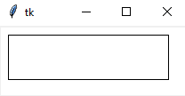
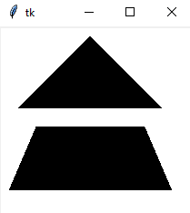
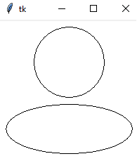
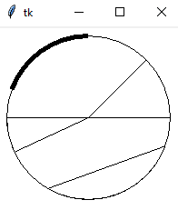

Холсты
Создание окон
В современных операционных системах любое пользовательское приложение заключено в окно, которое можно назвать главным, так как в нем располагаются все остальные виджеты. Объект окна верхнего уровня создается от класса Tk модуля tkinter. Переменную, связываемую с объектом, часто называют root (корень), но называть её можно, как-угодно:
root = Tk()
Метод mainloop() объекта Tk запускает главный цикл обработки событий, что в том числе приводит к отображению главного окна на экране:
root.mainloop()
Таким образом пустое окно программы мы можем запустить с помощью простого кода
from tkinter import *
root = Tk()
root.mainloop()
Холст
В TKinter от класса Canvas создаются объекты-холсты, на которых можно "рисовать", размещая различные фигуры и объекты. Делается это с помощью вызовов соответствующих методов.
При создании экземпляра Canvas необходимо указать его ширину и высоту. При размещении геометрических примитивов и других объектов указываются их координаты на холсте. Точкой отсчета является верхний левый угол.

С помощью кода ниже создаётся холст.
from tkinter import *
root = Tk()
c = Canvas(root, width=200, height=200, bg='white') # Объект - холст
c.pack() # Метод упаковки объекта
root.mainloop()

Графические примитивы
В TKinter есть графические примитивы, с помощью которых мы можем рисовать.
Линии можно создавать методом create_line(), где перед этим мы указываем место, где создается примитив.
c.create_line(x1, y1, x2, y2)

Прямоугольники можно создать методом create_rectangle(), где координаты x1 и y1 - это координаты верхнего левого угла, а x2 y2 - нижнего правого.
c.create_rectangle(x1, y1, x2, y2)

Методом create_polygon() рисуется произвольный многоугольник путем задания координат каждой его точки:
c.create_polygon(100, 10, 20, 90, 180, 90) # Треугольник
c.create_polygon(40, 110, 160, 110, 190, 180, 10, 180) # Трапеция
c.create_polygon((40, 110), (160, 110), (190, 180), (10, 180))

Метод create_oval() создает эллипсы. При этом задаются координаты гипотетического прямоугольника, описывающего эллипс. Если нужно получить круг, то соответственно описываемый прямоугольник должен быть квадратом.
c.create_oval(50, 10, 150, 110)
c.create_oval(10, 120, 190, 190)

Более сложные для понимания фигуры получаются при использовании метода create_arc(). В зависимости от значения опции style можно получить сектор (по умолчанию), сегмент (CHORD) или дугу (ARC). Также как в случае create_oval() координаты задают прямоугольник, в который вписана окружность (или эллипс), из которой "вырезают" сектор, сегмент или дугу. Опции start присваивается градус начала фигуры, extent определяет угол поворота.
c.create_oval(10, 10, 190, 190)
c.create_arc(10, 10, 190, 190, start=0, extent=45)
c.create_arc(10, 10, 190, 190, start=180, extent=25)
c.create_arc(10, 10, 190, 190, start=240, extent=100, style=CHORD)
c.create_arc(10, 10, 190, 190, start=160, extent=-70, style=ARC, width=5)
